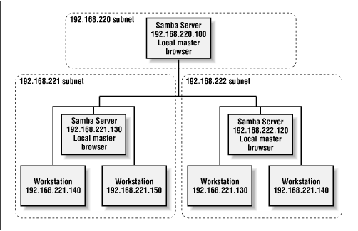

Using Samba
Robert Eckstein, David Collier-Brown, Peter Kelly1st Edition November 1999
1-56592-449-5, Order Number: 4495
416 pages, $34.95
|
|
|
|
|
Using SambaRobert Eckstein, David Collier-Brown, Peter Kelly1st Edition November 1999 1-56592-449-5, Order Number: 4495 416 pages, $34.95 |
 | Chapter 5 |
 |
5. Browsing and Advanced Disk Shares
Contents:
Browsing
Filesystem Differences
File Permissions and Attributes on MS-DOS and Unix
Name Mangling and Case
Locks and Oplocks
This chapter continues our discussion of disk shares from the previous chapter. Here, we will discuss various differences between the Windows and Unix filesystems - and how Samba works to bridge the gap. There are a surprising number of inconsistencies between a DOS filesystem and a Unix filesystem. In addition, we will talk briefly about name mangling, file locking, and a relatively new feature for Samba: opportunistic locking, or oplocks. However, before we move into that territory, we should first discuss the somewhat arcane topic of browsing with Samba.
5.1 Browsing
Browsing is the ability to examine the servers and shares that are currently available on your network. On a Windows NT 4.0 or 95/98 client, a user can browse network servers through the Network Neighborhood folder. By double-clicking the icon representing the server, the user should be able to see the printer and disk share resources available on that machine as well. (If you have Windows NT 3. x, you can use the Disk-Connect Network Drive menu in the File Manager to display the available shares on a server.)
From the Windows command line, you can also use the
netviewoption to see which servers are currently on the network. Here is an example of thenetviewcommand in action:C:\>net viewServers available in workgroup SIMPLE Server name Remark ---------------------------------------------------------- \\CHIMAERA Windows NT 4.0 \\HYDRA Samba 2.0.4 on (hydra) \\PHOENIX Windows 985.1.1 Preventing Browsing
You can restrict a share from being in a browse list by using the
browseableoption. This boolean option prevents a share from being seen in the Network Neighborhood at all. For example, to prevent the[data]share from the previous chapter from being visible, we could write:[data] path = /home/samba/data browseable = no guest ok = yes comment = Data Drive volume = Sample-Data-Drive writeable = yesAlthough you typically don't want to do this to an ordinary disk share, the browseable option is useful in the event that you need to create a share with contents that you do not want others to see, such as a
[netlogin]share for storing logon scripts for Windows domain control (see Chapter 6, Users, Security, and Domains for more information on logon scripts).Another example is the
[homes]share. This share is often marked non-browsable so that a share named[homes]won't appear when its machine's resources are browsed. However, if a useralicelogs on and looks at the machine's shares, an[alice]share will appear under the machine. What if we wanted to make surealice's share appeared to everyone before she logs in? This could be done with the globalautoservicesoption. This option preloads shares into the browse list to ensure that they are always visible:[global] ... auto services = alice ...5.1.2 Default Services
In the event that a user cannot successfully connect to a share, you can specify a default share to which they can connect. Since you do not know who will default to this share at any time, you will probably want to set the
guestokoption toyesfor this share. Specifying adefaultservicecan be useful when sending the utterly befuddled to a directory of help files. For example:[global] ... default service = helpshare ... [helpshare] path = /home/samba/helpshare/%S browseable = yes guest ok = yes comment = Default Share for Unsuccessful Connections volume = Sample-Data-Drive writeable = noNote that we used the
%Svariable in thepathoption. If you use the%Svariable, it will refer to the requested nonexistent share (the original share requested by the user), not the name of the resulting default share. This allows us to create different paths with the names of each server, which can provide more customized help files for users. In addition, any underscores ( _ ) specified in the requested share will be converted to slashes ( / ) when the%Svariable is used.5.1.3 Browsing Elections
As mentioned in Chapter 1, Learning the Samba, one machine in each subnet always keeps a list of the currently active machines. This list is called the browse list and the server that maintains it is called the local master browser. As machines come on and off the network, the local master browser continually updates the information in the browse list and provides it to any machine that requests it.
A computer becomes a local master browser by holding a browsing election on the local subnet. Browsing elections can be called at any time. Samba can rig a browsing election for a variety of outcomes, including always becoming the local master browser of the subnet or never becoming it. For example, the following options, which we've added to the configuration file from Chapter 4, Disk Shares , will ensure that Samba always wins the election for local master browser no matter which machines are also present:
[global] netbios name = HYDRA server string = Samba %v on (%L) workgroup = SIMPLE # Browsing election options os level = 34 local master = yes # Networking configuration options hosts allow = 192.168.220. 134.213.233. localhost hosts deny = 192.168.220.102 interfaces = 192.168.220.100/255.255.255.0 \ 134.213.233.110/255.255.255.0 # Debug logging information log level = 2 log file = /var/log/samba.log.%m max log size = 50 debug timestamp = yes [data] path = /home/samba/data browseable = yes guest ok = yes comment = Data Drive volume = Sample-Data-Drive writable = yesHowever, what if we didn't always want to win the election? What if we wanted to yield browsing to a Windows NT Server if present? In order to do that, we need to learn how browsing elections work. As you already know, each machine that takes place in the election must broadcast information about itself. This information includes the following:
Here is how the election is decided. Operating systems are assigned a binary value according to their version, as shown in Table 5.1.
Table 5.1: Operating System Values in an Election Operating System
Value
Windows NT Server 4.0
33
Windows NT Server 3.51
32
Windows NT Workstation 4.0
17
Windows NT Workstation 3.51
16
Windows 98
2
Windows 95
1
Windows 3.1 for Workgroups
1
Following that, each computer on the network is assigned a separate value according to its role, as shown in Table 5.2.
Table 5.2: Computer Role Settings in an Election Role
Value
Primary Domain Controller
128
WINS Client
32
Preferred Master Browser
8
Active Master Browser
4
Standby Browser
2
Active Backup Browser
1
Elections are decided in the following order:
The machine with the highest version of the election protocol will win. (So far, this is meaningless, as all Windows clients have version 1 of the election protocol.)
The machine with the highest operating system value wins the election.
If there is a tie, the machine with the setting of Preferred Master Browser (role 8) wins the election.
If there is still a tie, the client who has been online the longest wins the election.
And finally, if there is still a tie, the client name that comes first alphabetically wins.
The machine that is the "runner-up" can become a backup browser.
As a result, if you want Samba to take the role of a local master browser, but only if there isn't a Windows NT Server (4.0 or 3.51) on the network, you could change the
oslevelparameter in the previous example to:os level = 31This will cause Samba to immediately lose the election to a Windows NT 4.0 or Windows NT 3.5 Server, both of which have a higher operating systems level. On the other hand, if you wanted to decide the local master browser on the basis of the network role, such as which machine is the primary domain controller, you could set the
oslevelto match the highest type of operating system on the network and let the election protocol fall down to the next level.How can you can tell if a machine is a local master browser? By using the
nbtstatcommand. Place the NetBIOS name of the machine you wish to check after the-aoption:C:\>nbtstat -a hydraNetBIOS Remote Machine Name Table Name Type Status ---------------------------------------------------------- HYDRA <00> UNIQUE Registered HYDRA <03> UNIQUE Registered HYDRA <20> UNIQUE Registered .._ _MSBROWSE_ _. <01> GROUP Registered SIMPLE <00> GROUP Registered SIMPLE <1D> UNIQUE Registered SIMPLE <1E> GROUP Registered MAC Address = 00-00-00-00-00-00The resource entry that you're looking for is the
.._ _MSBROWSE_ _.<01>. This indicates that the server is currently acting as the local master browser for the current subnet. In addition, if the machine is a Samba server, you can check the Samba nmbd log file for an entry such as:nmbd/nmbd_become_lmb.c:become_local_master_stage2(406) ***** Samba name server HYDRA is now a local master browser for workgroup SIMPLE on subnet 192.168.220.100 ****Finally, Windows NT servers serving as primary domain controllers contain a sneak that allows them to assume the role of the local master browser in certain conditions; this is called the preferred master browser bit. Earlier, we mentioned that Samba could set this bit on itself as well. You can enable it with the
preferredmasteroption:# Browsing election options os level = 33 local master = yes preferred master = yesIf the preferred master bit is set, the machine will force a browsing election at startup. Of course, this is needed only if you set the
osleveloption to match the Windows NT machine. We recommend that you don't use this option if another machine also has the role of preferred master, such as an NT server.5.1.4 Domain Master Browser
In the opening chapter, we mentioned that in order for a Windows workgroup or domain to extend into multiple subnets, one machine would have to take the role of the domain master browser. The domain master browser propagates browse lists across each of the subnets in the workgroup. This works because each local master browser periodically synchronizes its browse list with the domain master browser. During this synchronization, the local master browser passes on any server that the domain master browser does not have in its browse list, and vice versa. In a perfect world, each local master browser would eventually have the browse list for the entire domain.
Unlike the local master browser, there is no election to determine which machine assumes the role of the domain master browser. Instead, the administrator has to set it manually. By Microsoft design, however, the domain master browser and the primary domain controller (PDC) both register a resource type of <1B>, so the roles - and the machines - are inseparable.
If you have a Windows NT server on the network acting as a PDC, we recommend that you do not use Samba to become the domain master browser. The reverse is true as well: if Samba is taking on the responsibilities of a PDC, we recommend making it the domain master browser as well. Although it is possible to split the roles with Samba, this is not a good idea. Using two different machines to serve as the PDC and the domain master browser can cause random errors to occur on a Windows workgroup.
Samba can assume the role of a domain master browser for all subnets in the workgroup with the following option:
domain master = yesYou can verify that a Samba machine is in fact the domain master browser by checking the nmbd log file:
nmbd/nmbd_become_dmb.c:become_domain_master_stage2(118) ***** Samba name server HYDRA is now a domain master browser for workgroup SIMPLE on subnet 192.168.220.100 *****Or you can use the
nmblookupcommand that comes with the Samba distribution to query for a unique <1B> resource type in the workgroup:#nmblookup SIMPLE#1BSending queries to 192.168.220.255 192.168.220.100 SIMPLE<1b>5.1.4.1 Multiple subnets
There are three rules that you must remember when creating a workgroup/domain that spans more than one subnet:
You must have either a Windows NT or Samba machine acting as a local master browser on each subnet in the workgroup/domain. (If you have a domain master browser in a subnet, a local master browser is not needed.)
You must have a Windows NT Server or a Samba machine acting as a domain master browser somewhere in the workgroup.
Each local master browser must be instructed to synchronize with the domain master browser.
Samba has a few other features in this arena in the event that you don't have or want a domain master browser on your network. Consider the subnets shown in Figure 5.1.
Figure 5.1: Multiple subnets with Samba servers
First, a Samba server that is a local master browser can use the
remoteannounceconfiguration option to make sure that computers in different subnets are sent broadcast announcements about the server. This has the effect of ensuring that the Samba server appears in the browse lists of foreign subnets. To achieve this, however, the directed broadcasts must reach the local master browser on the other subnet. Be aware that many routers do not allow directed broadcasts by default; you may have to change this setting on the router for the directed broadcasts to get through to its subnet.With the
remoteannounceoption, list the subnets and the workgroup that should receive the broadcast. For example, to ensure that machines in the 192.168.221 and 192.168.222 subnets and SIMPLE workgroup are sent broadcast information from our Samba server, we could specify the following:# Browsing election options os level = 34 local master = yes remote announce = 192.168.221.255/SIMPLE \ 192.168.222.255/SIMPLEIn addition, you are allowed to specify the exact address to send broadcasts to if the local master browser on the foreign subnet is guaranteed to always have a fixed IP address.
A Samba local master browser can synchronize its browse list directly with another Samba server acting as a local master browser on a different subnet. For example, let's assume that Samba is configured as a local master browser, and Samba local master browsers exist at 192.168.221.130 and 192.168.222.120. We can use the
remotebrowsesyncoption to sync directly with the Samba servers, as follows:# Browsing election options os level = 34 local master = yes remote browse sync = 192.168.221.130 192.168.222.120In order for this to work, the other Samba machines must also be local master browsers. You can also use directed broadcasts with this option if you do not know specific IP addresses of local master browsers.
5.1.5 Browsing Options
Table 5.3 shows 14 options that define how Samba handles browsing tasks. We recommend the defaults for a site that prefers to be easy on its users with respect to locating shares and printers.
Table 5.3: Browsing Configuration Options Option
Parameters
Function
Default
Scope
announce as
NTorWin95orWf WSets the operating system that Samba will announce itself as.
N TGlobal
announce versionnumerical
Sets the version of the operating system that Samba will announce itself as.
4.2Global
browseable (browsable)boolean
Allows share to be displayed in list of machine resources.
yesShare
browse listboolean
If
yes, Samba will provide a browse list on this server.
yesGlobal
auto services (preload)string (share list)
Sets a list of shares that will always appear in the browse list.
None
Global
default service (default)string (share name)
Names a share (service) that will be provided if the client requests a share not listed in smb.conf.
None
Global
local masterboolean
If
yes, Samba will try to become a master browser on the local subnet.
yesGlobal
lm announce
yesornoorautoEnables or disables LAN Manager style host announcements.
autoGlobal
lm intervalnumerical
Specifies the frequency in seconds that LAN Manager announcements will be made if activated.
60Global
preferred master (prefered master)boolean
If
yes, Samba will use the preferred master browser bit to attempt to become the local master browser.
noGlobal
domain masterboolean
If
yes, Samba will try to become the main browser master for the workgroup.
noGlobal
os levelnumerical
Sets the operating system level of Samba in an election for local master browser.
0Global
remote browse syncstring (list of IP addresses)
Lists Samba servers to synchronize browse lists with.
None
Global
remote announcestring (IP address/ workgroup pairs)
Lists subnets and workgroups to send directed broadcast packets to, allowing Samba to appear to browse lists.
None
Global
5.1.5.1 announce as
This global configuration option specifies the type of operating system that Samba will announce to other machines on the network. The default value for this option is
N T, which represents a Windows NT operating system. Other possible values areWin95, which represents a Windows 95 operating system, andW f Wfor a Windows for Workgroup operating system. You can override the default value with the following:[global] announce as = Win95We recommend against changing the default value of this configuration option.
5.1.5.2 announce version
This global option is frequently used with the
announceasconfiguration option; it specifies the version of the operating system that Samba will announce to other machines on the network. The default value of this options is 4.2, which places itself above the current Windows NT version of 4.0. You can specify a new value with a global entry such as the following:[global] announce version = 4.3We recommend against changing the default value of this configuration option.
5.1.5.3 browseable
The
browseableoption (also spelledbrowsable) indicates whether the share referenced should appear in the list of available resources of the machine on which it resides. This option is always set toyesby default. If you wish to prevent the share from being seen in a client's browser, you can reset this option tono.Note that this does not prevent someone from accessing the share using other means, such as specifying a UNC location (
//server/accounting)in Windows Explorer. It only prevents the share from being listed under the machine's resources when being browsed.5.1.5.4 browse list
You should never need to change this parameter from its default value of
yes. If your Samba server is acting as a local master browser (i.e., it has won the browsing election), you can use the globalbrowselistoption to instruct Samba to provide or withhold its browse list to all clients. By default, Samba always provides a browse list. You can withhold this information by specifying the following:[global] browse list = noIf you disable the browse list, clients cannot browse the names of other machines, their services, and other domains currently available on the network. Note that this won't make any particular machine inaccessible; if someone knows a valid machine name/address and a share on that machine, they can still connect to it explicitly using NET USE or by mapping a drive letter to it using Windows Explorer. It simply prevents information in the browse list from being retrieved by any client that requests it.
5.1.5.5 auto services
The global
autoservicesoption, which is also calledpreload, ensures that the specified shares are always visible in the browse list. One common use for this option is to advertise specific user or printer shares that are created by the[homes]or[printers]shares, but are not otherwise browsable.This option works best with disk shares. If you wish to force each of your system printers (i.e., those listed in the printer capabilities file) into the browse list using this option, we recommend using the
loadprintersoption instead. Any shares listed with theautoservicesoption will not be displayed if thebrowselistoption is set tono.5.1.5.6 default service
The global
defaultserviceoption (sometimes calleddefault) names a "last-ditch" share. If set to an existing share name, and a client requests a nonexistent disk or printer share, Samba will attempt to connect the user to the share specified by this option instead. The option is specified as follows:default service = helpshareNote that there are no braces surrounding the share name
helpshare, even though the definition of the share later in the Samba configuration file will have braces. Also, if you use the%Svariable in the share specified by this option, it will represent the requested, nonexistent share, not the default service. Any underscores (_) specified in the request share will be converted to slashes (/) when the variable is used.5.1.5.7 local master
This global option specifies whether Samba will attempt to become the local master browser for the subnet when it starts up. If this option is set to
yes, Samba will take place in elections. However, setting this option by itself does not guarantee victory. (Other parameters, such aspreferredmasterandoslevelhelp Samba win browsing elections.) If this option is set tono, Samba will lose all browsing elections, no matter which values are specified by the other configuration options. The default value isyes.5.1.5.8 lm announce
The global
lmannounceoption tells Samba's nmbd whether or not to send LAN Manager host announcements on behalf of the server. These host announcements may be required by older clients, such as IBM's OS/2 operating system. This announcement allows the server to be added to the browse lists of the client. If activated, Samba will announce itself repetitively at the number of seconds specified by thelmintervaloption.This configuration option takes the standard boolean values,
yesandno, which engage or disengage LAN Manager announcements, respectively. In addition, there is a third option,auto, which causes nmbd to passively listen for LAN Manager announcements, but not send any of its own initially. If LAN Manager announcements are detected for another machine on the network, nmbd will start sending its own LAN Manager announcements to ensure that it is visible. You can specify the option as follows:[global] lm announce = yesThe default value is
auto. You probably won't need to change this value from its default.5.1.5.9 lm interval
This option, which is used in conjunction with
lmannounce, indicates the number of seconds nmbd will wait before repeatedly broadcasting LAN Manager-style announcements. Remember that LAN Manager announcements must be activated in order for this option to be used. The default value is 60 seconds. If you set this value to 0, Samba will not send any LAN Manager host announcements, no matter what the value of thelmannounceoption. You can reset the value of this option as follows:[global] lm interval = 905.1.5.10 preferred master
The
preferredmasteroption requests that Samba set the preferred master bit when participating in an election. This gives the server a higher preferred status in the workgroup than other machines at the same operating system level. If you are configuring your Samba machine to become the local master browser, it is wise to set the following value:[global] preferred master = yesOtherwise, you should leave it set to its default,
no. If Samba is configured as a preferred master browser, it will force an election when it first comes online.5.1.5.11 os level
The global
osleveloption dictates the operating system level at which Samba will masquerade during a browser election. If you wish to have Samba win an election and become the master browser, you can set the level above that of the operating system on your network with the highest current value. The values are shown in Table 5-1. The default level is 0, which means that Samba will lose all elections. If you wish Samba to win all elections, you can reset its value as follows:os level = 34This means that the server will vote for itself 34 times each time an election is called, which ensures a victory.
5.1.5.12 domain master
If Samba is the primary domain controller for your workgroup or NT domain, it should also be the domain master browser. The domain master browser is a special machine that has the NetBIOS resource type <1B> and is used to propagate browse lists to and from each of the local master browsers in individual subnets across the domain. To force Samba to become the domain master browser, set the following in the
[global]section of the smb.conf:[global] domain master = yesIf you have a Windows NT server on the network acting as a primary domain controller (PDC), we recommend that you do not use Samba to become the domain master browser. The reverse is true as well: if Samba is taking on the responsibilities of a PDC, we recommend making it the domain master browser. Splitting the PDC and the domain master browser will cause unpredictable errors to occur on the network.
5.1.5.13 remote browse sync
The global
remotebrowsesyncoption specifies that Samba should synchronize its browse lists with local master browsers in other subnets. However, the synchronization can occur only with other Samba servers, and not with Windows computers. For example, if your Samba server was a master browser on the subnet 192.168.235, and Samba local master browsers existed on other subnets at 192.168.234.92 and 192.168.236.2, you could specify the following:remote browse sync = 192.168.234.92 192.168.236.2The Samba server would then directly contact the other machines on the address list and synchronize browse lists. You can also say:
remote browse sync = 192.168.234.255 192.168.236.255This forces Samba to broadcast queries to determine the IP addresses of the local master browser on each subnet, with which it will then synchronize browse lists. This only works, however, if your router doesn't block directed broadcast requests ending in 255.
5.1.5.14 remote announce
Samba servers are capable of providing browse lists to foreign subnets with the
remoteannounceoption. This is typically sent to the local master browser of the foreign subnet in question. However, if you do not know the address of the local master browser, you can do the following:[global] remote announce = 192.168.234.255/ACCOUNTING \ 192.168.236.255/ACCOUNTINGWith this, Samba will broadcast host announcements to all machines on subnets 192.168.234 and 192.168.236, which will hopefully reach the local master browser of the subnet. You can also specify exact IP addresses, if they are known.
|
|
 |
|
| 4.8 Logging Configuration Options |
 | 5.2 Filesystem Differences |
Back to: Using Samba
© 1999, O'Reilly & Associates, Inc.